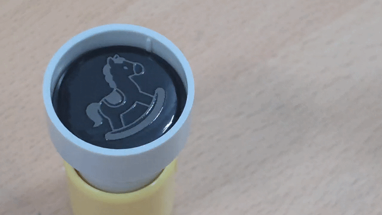

A TYPE | FRONT INJECTION
A 타입 전면주입 리필 방법
고무 패드 위쪽에서 잉크를 천천히 흡수시키는 방식입니다. 잉크가 흐르지 않을 정도로 소량씩 나누어 충전해 주세요.

-
스탬프를 준비합니다
고무 패드 면이 위로 오도록 스탬프를 안정적으로 세워 주세요.
-
잉크를 떨어뜨립니다
잉크가 옆으로 흐르지 않을 정도로 고무 패드에 골고루 떨어뜨려 주세요.
-
20분 정도 기다립니다
잉크가 충분히 흡수될 때까지 뚜껑을 닫고 기다려 주세요.
-
이면지에 테스트합니다
사용 전 이면지에 여러 번 테스트한 뒤 원하는 면에 찍어 주세요.